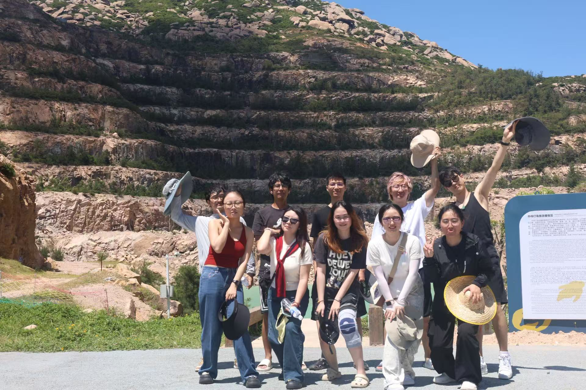

跳到正文 / Skip to content
细胞命运实验室
Cell Fate Lab
首页
Home
研究
Research
论文
Publications
团队
People
动态
News
活动
Lab life
加入我们
Join
中文
/
EN
珠海外伶仃岛团建
Wailingding Island team outing
2025
2025
·
珠海 · 外伶仃岛
Wailingding Island, Zhuhai
← 全部活动
← All activities
珠海外伶仃岛合影
Wailingding Island, Zhuhai · group photo 1

珠海外伶仃岛团建留影
Wailingding Island, Zhuhai · group photo 2